1import matplotlib.pyplot as plt
2import numpy as np
3import scipy.stats as stats
4import seaborn as sns
5from src.code.simulation.galton_watson import GaltonWatson
6from src.code.simulation.utils import plot_zn_distribution, test_loi_exponentielle
7from src.config.config import seed
8from src.utils.utils import init_notebook
1init_notebook(seed)
Simulation Galton-Watson#
Loi de Poisson#
λ = 1#
Soit \(L\) la loi de reproduction.
Nous avons \(L \sim {\mathrm {Poisson}}(1)\).
1poisson_1 = stats.poisson(1)
1gp1 = GaltonWatson(poisson_1)
2gp1
Processus Galton-Watson
- loi de reproduction L : poisson
- espérance E[L] = 1.0
- époque n = 0
- nombre de survivants Z_n = 1
1nb_survivants = gp1.simule(20)
1print(f"Il reste {nb_survivants} survivants au bout de {gp1.n} époques.")
Il reste 0 survivants au bout de 10 époques.
1plt.figure(figsize=(15, 10))
2gp1.plot_historique_descendants()
3plt.savefig("assets/img/number-of-children.png")
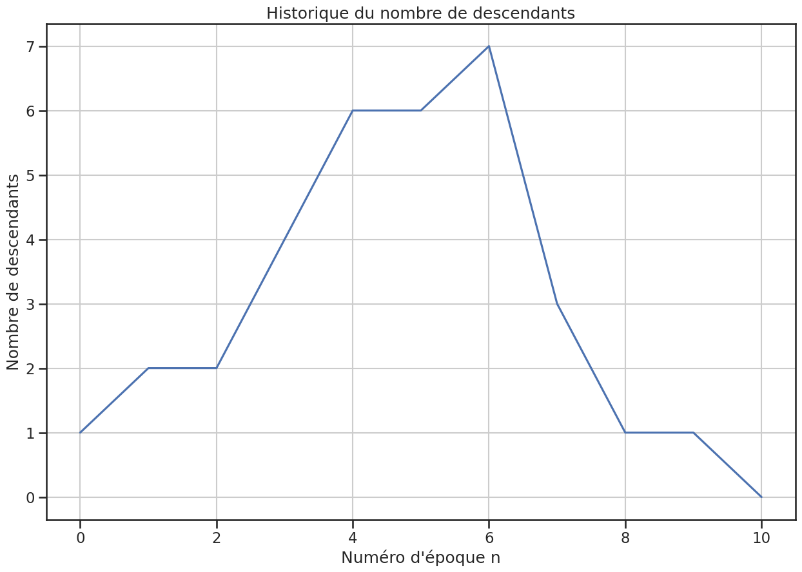
1# noinspection JupyterPackage
2plt.figure(figsize=(15, 10))
3gp1.plot_zn_sur_n()
4plt.savefig("assets/img/zn-over-n.png")
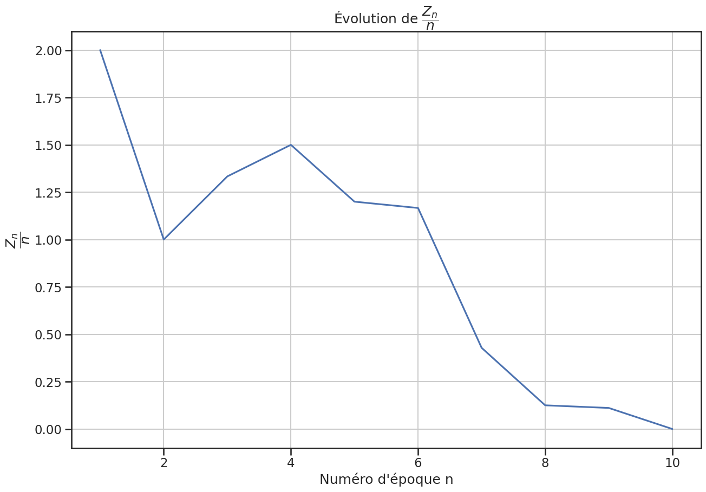
Arbre de Galton-Watson#
1plt.figure(figsize=(12, 10))
2gp1.plot_arbre()
3plt.savefig("assets/img/galton-watson-tree.png", transparent=True)
4plt.savefig("assets/img/galton-watson-tree.svg", transparent=True)
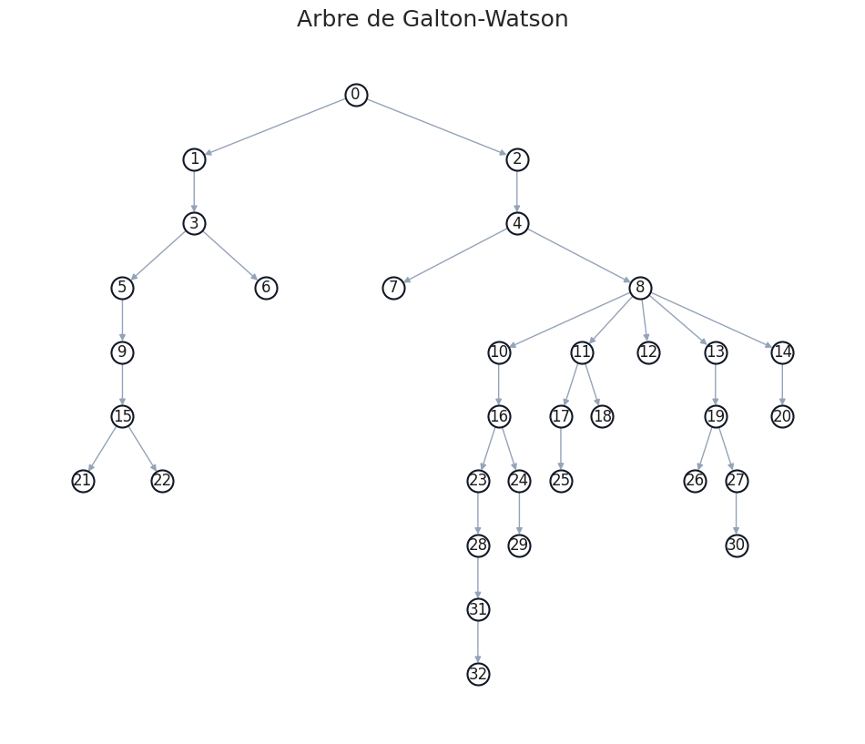
1gp1.plot_arbre(circular=True)
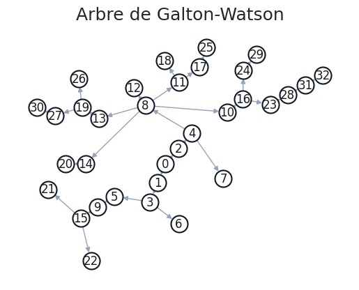
λ = 2#
1poisson_2 = stats.poisson(2)
1gp2 = GaltonWatson(poisson_2)
2gp2
Processus Galton-Watson
- loi de reproduction L : poisson
- espérance E[L] = 2.0
- époque n = 0
- nombre de survivants Z_n = 1
1nb_survivants = gp2.simule(20)
1print(f"Il reste {nb_survivants} survivants au bout de {gp2.n} époques.")
Il reste 680149 survivants au bout de 20 époques.
1gp2.plot_historique_descendants(logscale=True, affiche_moyenne=True)
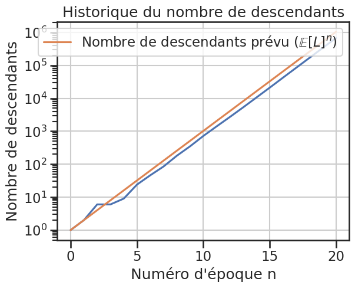
1gp2.plot_zn_sur_n(logscale=True)
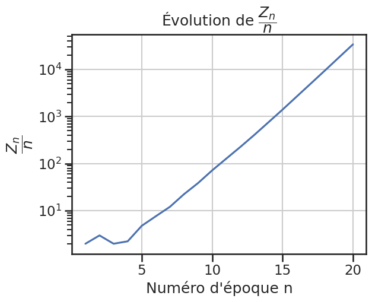
Essais \(Z_n / n\)#
1nb_simulations = 10_000
2nb_epoques = 100
1simulations = gp1.lance_simulations(nb_simulations, nb_epoques)
2simulations = np.array(simulations)
1plt.figure(figsize=(25, 10))
2plot_zn_distribution(simulations, nb_epoques)
<Figure size 2500x1000 with 0 Axes>
1np.sum(simulations > 0)
np.int64(191)
1zn_sup_zero = simulations[simulations > 0]
1plt.figure(figsize=(10, 10))
2plt.title("Distribution des $Z_n$,\n$n = 100$, et $Z_n > 0$")
3plt.hist(zn_sup_zero)
4plt.savefig("assets/img/zn-sup-zero-distribution.png")

1lambda_estime = 1.0 / np.mean(zn_sup_zero / nb_epoques)
2print(f"{lambda_estime = }")
lambda_estime = np.float64(1.902959051509415)
1loi_expo1 = stats.expon(scale=1 / lambda_estime)
1echantillon_expo = loi_expo1.rvs(size=len(zn_sup_zero))
1plt.figure(figsize=(10, 10))
2plt.title("Distribution de $Z_{n} / n$, $Z_n > 0$ avec $n = 100$")
3sns.histplot(zn_sup_zero / nb_epoques, stat="probability", label="$Z_n / n$")
4sns.histplot(
5 echantillon_expo,
6 stat="probability",
7 label=f"Échantillon de loi exponentielle ($\\lambda = {lambda_estime: 0.2}$)",
8)
9
10plt.legend()
11
12plt.savefig("assets/img/zn-sup-zero-distribution-with-exponential.png")

1test_loi_exponentielle(zn_sup_zero / nb_epoques)
(np.float64(0.531818713902256), np.float64(0.057586680541798524))
Loi uniforme sur {0, 1, 2}#
Soit \(L\) la loi de reproduction.
Nous avons \(L \sim {\mathrm {Uniforme}}(0, 2)\).
1uniforme2 = stats.randint(0, 3)
1gu2 = GaltonWatson(uniforme2)
2gu2
Processus Galton-Watson
- loi de reproduction L : randint
- espérance E[L] = 1.0
- époque n = 0
- nombre de survivants Z_n = 1
1nb_survivants = gu2.simule(100)
1print(f"Il reste {nb_survivants} survivants au bout de {gu2.n} époques.")
Il reste 23 survivants au bout de 100 époques.
1gu2.plot_historique_descendants()
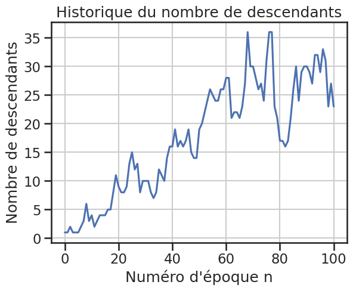
1gu2.plot_zn_sur_n()
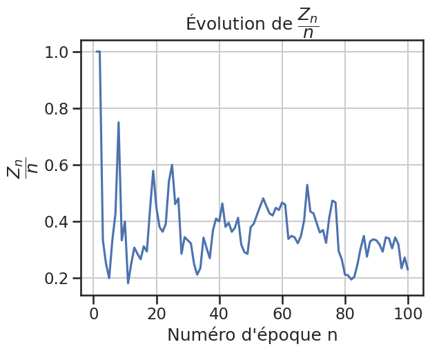
Arbre de Galton-Watson#
1gu2.plot_arbre()
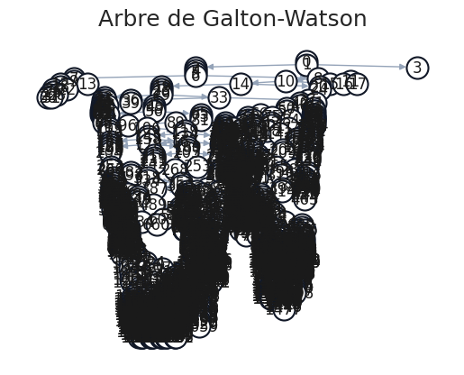
Essais \(Z_n / n\)#
1nb_simulations = 10_000
2nb_epoques = 100
3
4simulations = gu2.lance_simulations(nb_simulations, nb_epoques)
1simulations = np.array(simulations)
1plot_zn_distribution(simulations, nb_epoques)
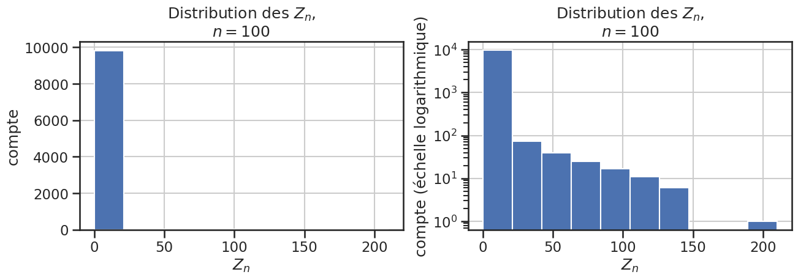
1np.sum(simulations > 0)
np.int64(295)
1zn_sup_zero = simulations[simulations > 0]
1plt.figure(figsize=(10, 10))
2plt.title("Distribution des $Z_n$ avec $Z_n > 0$")
3plt.hist(zn_sup_zero)
4
5plt.savefig("assets/img/zn-sup-zero-distribution-uniform.png")
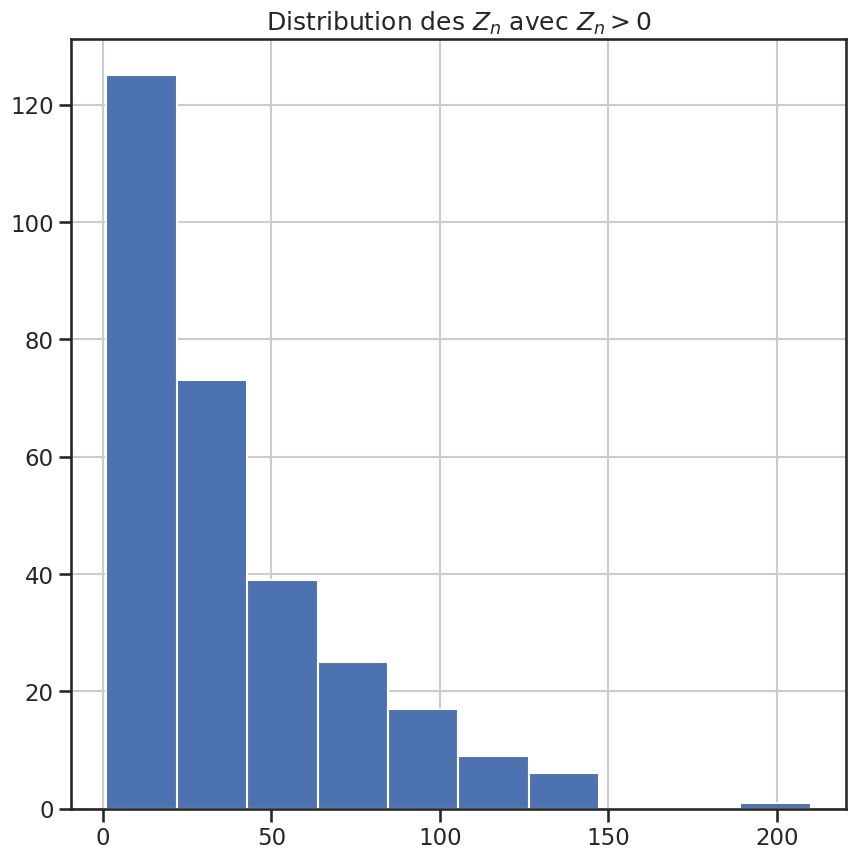
1lambda_estime = 1.0 / np.mean(zn_sup_zero / nb_epoques)
2print(f"{lambda_estime = }")
lambda_estime = np.float64(2.6538323137819364)
1loi_expo1 = stats.expon(scale=1 / lambda_estime)
1echantillon_expo = loi_expo1.rvs(size=len(zn_sup_zero))
1plt.figure(figsize=(10, 10))
2plt.title("Distribution de $Z_{n} / n$, $Z_n > 0$ avec $n = 100$")
3sns.histplot(zn_sup_zero / nb_epoques, stat="probability", label="$Z_n / n$")
4sns.histplot(
5 echantillon_expo,
6 stat="probability",
7 label=f"Échantillon de loi exponentielle ($\\lambda = {lambda_estime: 0.2}$)",
8)
9
10plt.legend()
11plt.savefig("assets/img/zn-sup-zero-distribution-uniform-with-exponential.png")
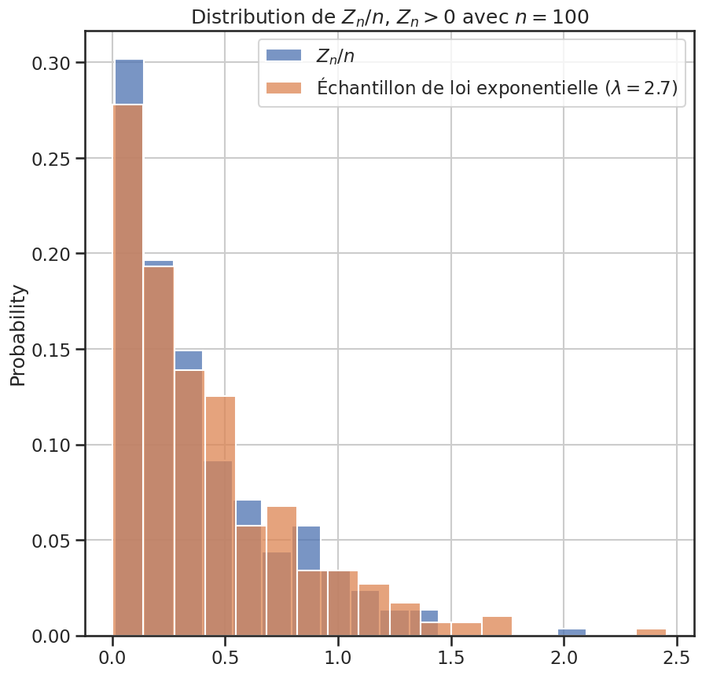
1p_value, _ = test_loi_exponentielle(zn_sup_zero / nb_epoques)
Expérimentations#
1for _ in range(500):
2 gp1.reset()
3 gp1.simule(20)
4 gp1.plot_historique_descendants()

1for _ in range(500):
2 gp1.reset()
3 gp1.simule(20)
4 gp1.plot_zn_sur_n()
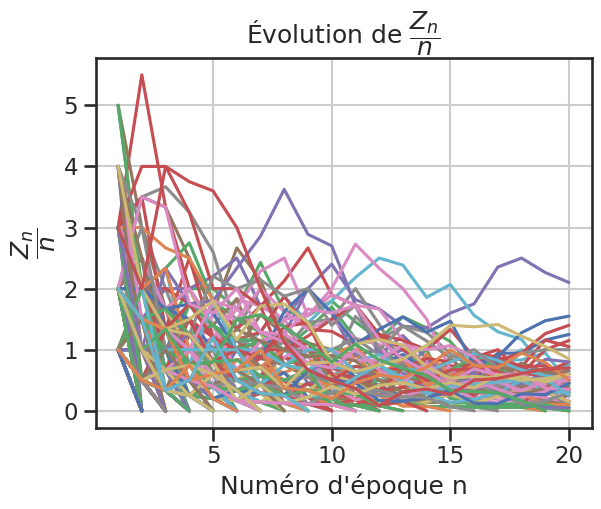